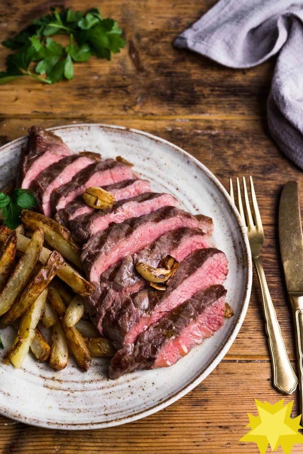

Back to home
Steak and chips

A classic done exceptionally well, or should we say a rare done exceptionally medium?
It doesn't get much more simple than a lovely plate of steak and chips, yet with a few
expert tweaks and some added care, you can up your game and impress friends and family!
At this recipe site we like our steak medium-rare, but seeing as we think you're
a pretty nice person, we'll avert our eyes if you choose for something a little more...
cooked?
Ingredients
For the chips:
- 2 large floury potatoes (500g)
- 1 tablespoon olive oil
- Pinch of salt and pepper
For the steak:
- 2 Rump steaks
- 2 tablespoon olive oil
- Salt to season steaks
- 40 g cubed butter
- 2 garlic cloves peeled and gently crushed with the flat side of a knife
Directions
- Remove steaks from the fridge 1 hour before cooking.
Preheat the oven to 200°C (fan) (450°F).
- Leave the skins on the potatoes and slice into chips, around half
a cm thick. Place the chips into a bowl and toss in olive oil,
salt and pepper. Transfer to a baking tray and bake for 30 minutes
or until golden and crisp. Turn half way through.
- Start to prepare the rump steaks when there is 15 minutes left
on the timer for the chips. Place a large griddle pan or frying
pan on a high heat. Prep the steak by drizzling both sides with
olive oil and salt. Then use your fingers to rub the oil and salt
into the meat.
- Once the pan is hot place the rump steaks in the pan,
they should sizzle immediately. Leave to cook on the first side
for 3-4 minutes.
- Turn the steak over and add the butter and 2 peeled and crushed garlic
cloves. Cook on the second side for 2-3 minutes (rare – medium) and
baste with butter and garlic. (Adjust the cooking time according to
your preferences - see expert tips below). Once cooked transfer to a
chopping board and cover with foil. Allow to rest for 5 minutes.
Reserve any excess butter in the pan for drizzling later.
- Once rested, slice the steak and serve along the oven
roasted chips. Drizzle with the garlic butter.